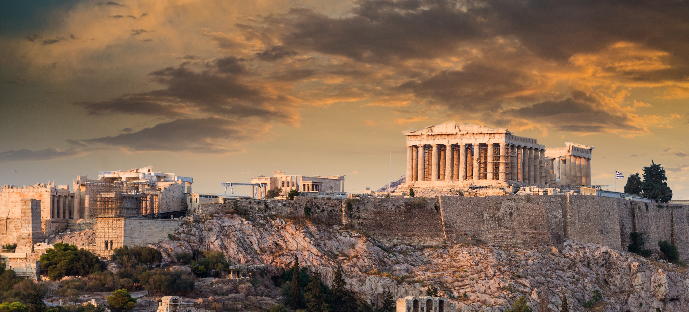
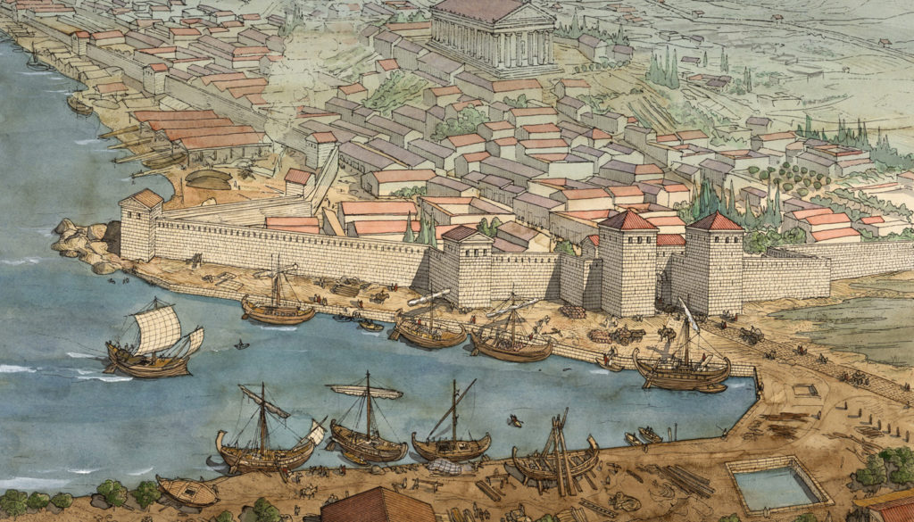
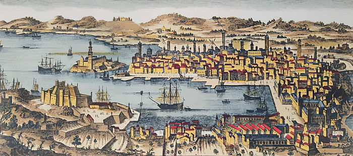
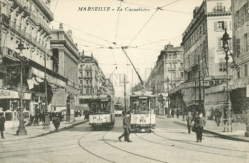
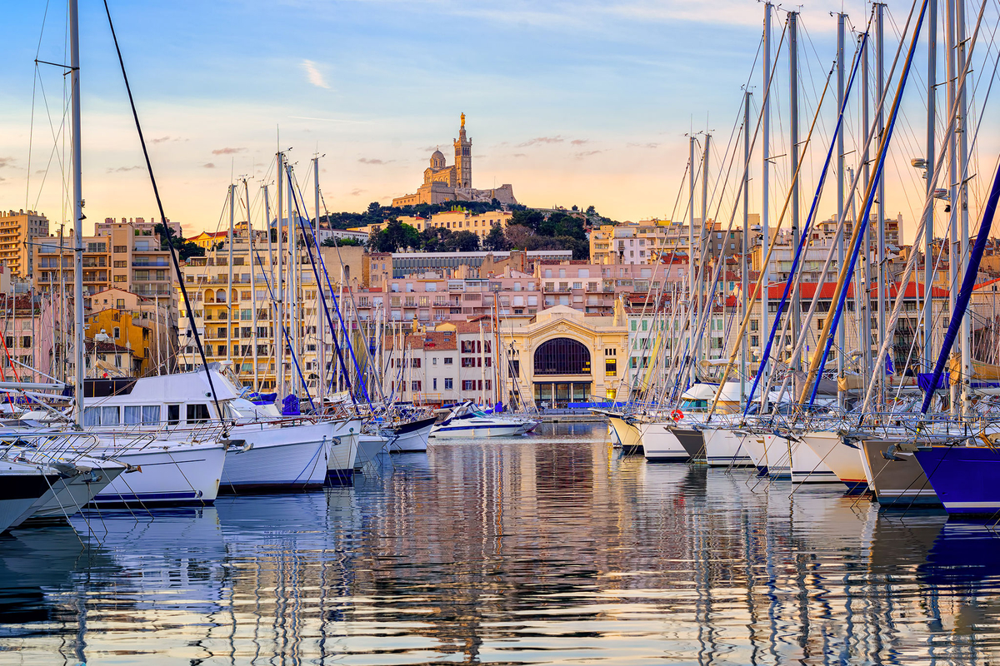

Marseille, as we know it today, traces its roots back to ancient Greece. Legend has it that around 600 BCE, Greek sailors from Phocaea, a city in Asia Minor, founded Massilia on the shores of the Mediterranean. This strategic choice proved crucial, transforming the city into a major commercial hub due to its ideal position for maritime trade. The port, now known as the Old Port, was the center of economic activity. The Greeks built fortifications to protect the city from invasions and erected temples dedicated to their gods. Massilia quickly became a key player in Mediterranean trade, collaborating with various cultures and contributing to the region's wealth.
Over the centuries, Marseille faced numerous challenges, including Celtic invasions and conflicts with Rome. Around 49 BCE, the city was integrated into the Roman Empire by Julius Caesar after fierce resistance from the people of Marseille. Roman influence left architectural traces, including theaters and aqueducts, bearing witness to this period of history. During the Roman Empire, Marseille thrived as a key port, facilitating trade across the Mediterranean. It became a cultural and intellectual center, attracting thinkers, artists, and merchants from across the Empire.
The 17th and 18th centuries marked Marseille's golden age. The city prospered through maritime trade, the growth of the naval industry, and the founding of the famous "Compagnie des Indes" (East India Company). The Old Port underwent redevelopment, and mansions testified to the wealth of the merchant bourgeoisie.
The 19th century was marked by the construction of the Basilica of Notre-Dame-de-la-Garde, a symbol of the city. Marseille continued to grow in the 20th century, becoming a major industrial center and a strategic port. However, the city also faced social, economic, and political challenges.
Today, Marseille is a modern metropolis that has preserved its heritage while looking to the future. Historic neighborhoods coexist with contemporary urban projects, making the Phocaean city a dynamic place where history and modernity harmoniously intersect.
